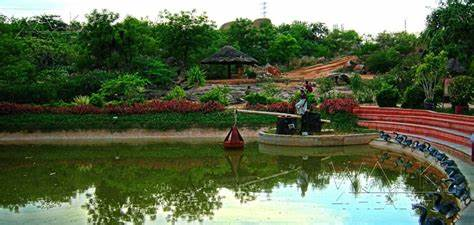

SHILPARAMAM

Shilparamam is an arts and crafts village located in Madhapur, Hyderabad, Telangana, India.
The village was conceived with an idea to create an environment for the preservation of traditional crafts. There are ethnic festivals round the year.
Shilparamam, a crafts village, conceived in the year 1992, is situated just about few kilometers from Hyderabad city. Sprawling over 65 acres (260,000 m2) of land in the hi-tech hub city of India, Shilparamam gives a scenic ambience of tradition and cultural heritage.
For promotion and preservation of Indian arts and crafts and to motivate the artisans, the state government established this platform.

How to reach:

By Air
The nearest airport is in hyderabad

By Train
The nearest railways is in hyderabad

By Road
shilparamam, the most famous tourist destination in Hyderabad, can be used as a landmark. A bus,cab,local rickshaw can also be taken to reach the capital.